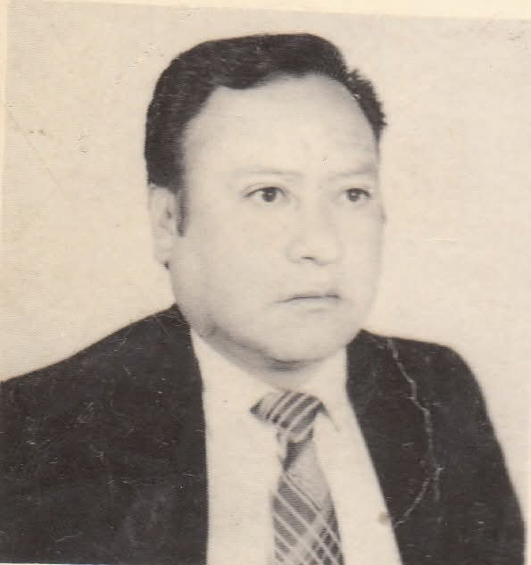

1. Datos personales
- Lugar de nacimiento: Uncía, Bolivia
- Fecha de nacimiento: 30 de marzo de 1945
- Padres: Honorato Ruiz Alvarado y Anacleta Claure Muños
- Familia: Esposa: Ruth Eyzaguirre Gonzalez
- Hijos: Richard Ruiz Eyzaguirre (†), Álvaro Ruiz Eyzaguirre (†), Jacqueline Ruiz Eyzaguirre
- Nietos: Valeria
- Reconocimientos: Distinguido ciudadano por el Honorable Concejo Municipal de Uncía
- Cargo: Presidente del Concejo Municipal por la sigla U.C.S. (1990–1991)
2. Trabajo y especialidad
- Trabajó en la Empresa Minera Catavi COMIBOL (1980–2000)
- Especialidad: Operador de winche Victoria y winche San Miguel en interior mina
3. Vida artística
Fue el ruiseñor de la época de oro, con un don en la vocalización incomparable.
Integrante de varios grupos musicales importantes de la época:
- Tres de Uncía
- Grupo Yuras
- Grupo Happy Boys
- Grupo Rocking
4. Curiosidades
- Seudónimo: "El Ruso"
- Era un caso extraordinario para contar cuentos
- Tenía una tendencia política troskista
- Siempre defendió a la clase obrera
- Bohemio, cantor y guitarrero, además de buen amigo
5. Fallecimiento y legado
Falleció el 20 de marzo de 2020, dejando un legado artístico imborrable para toda la familia uncina.